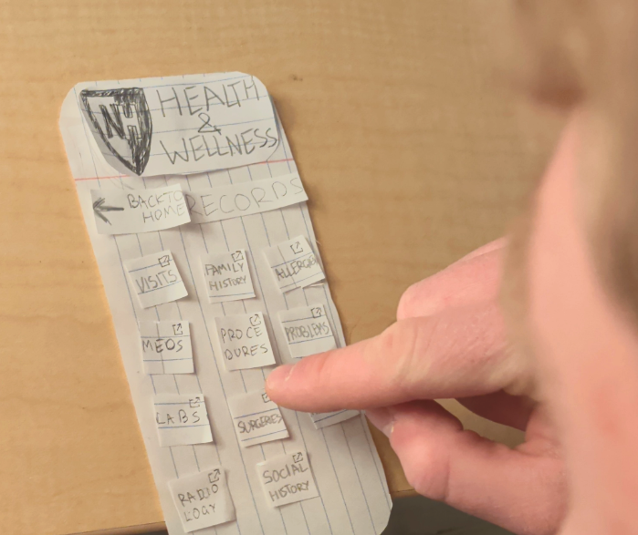
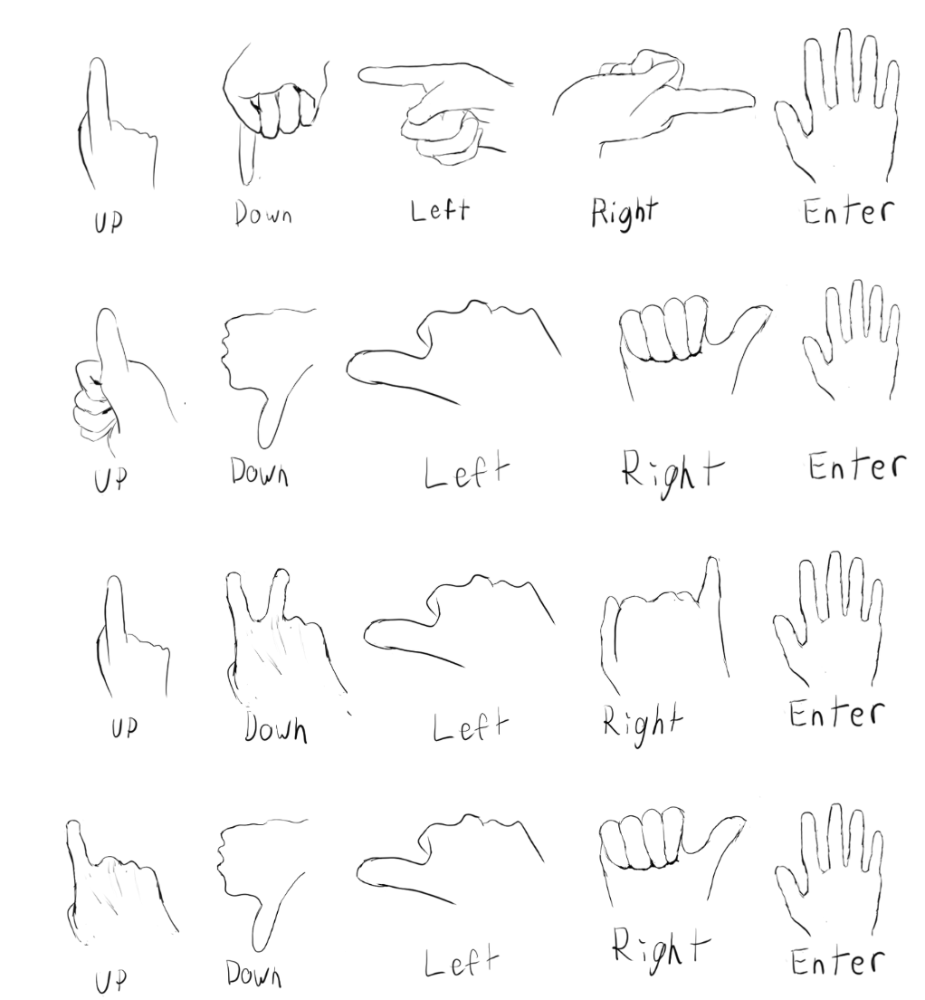
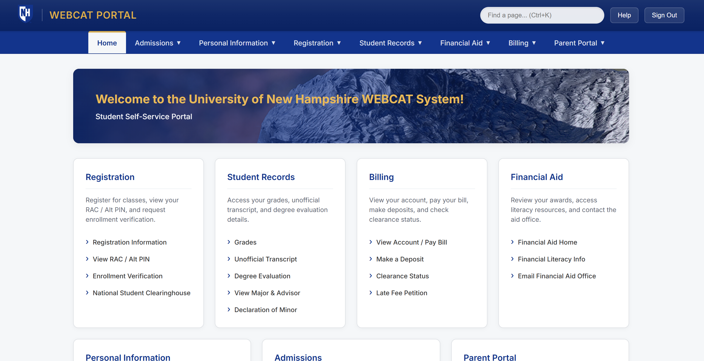

About Me
My name is Owen Chen and I'm an upcoming senior. As a hobby I've built multiple desktop computers, from low entry to high performance computers. In my HCI class I was expecting more coding intensive assignments, although it wasn't what I was expecting, it was a good lesson on how to design a website.
Projects

Designing for Others
This assignment has us working in a group to redesign a website suited for a targeted audience.

Designing for Gestural Interaction
This assignment has us in a group to create controls on a software only using hand gestures.

Designing for Usability
This assignment has us redesigning a software solving its issues using heuristic testing and making it more usable.